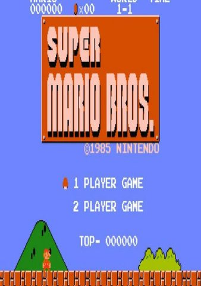

📱 Real-Time Mobile Emulation Showcase (NES)
Simulated modern bezel-less smartphone held horizontally with active translucent virtual touch controls running at locked 60 FPS.
![A photorealistic mockup of a modern, bezel-less Android smartphone held horizontally. On the smartphone screen, a vibrant, high-resolution gameplay screenshot of VS Super Mario Bros Nintendo Entertainment System is playing in high-speed combat view. Overlaid directly on top of the game screen are translucent, glowing white virtual emulator buttons: a digital D-pad on the left side, and four circular action buttons on the right side. The phone is set against a clean, minimalist dark studio background with dramatic lighting highlighting the screen. 8k, highly detailed, realistic mobile gaming concept.](../assets/images/games/nes_159137_vs-super-mario-bros-vs.jpg)
1. Legacy & Historical Context
VS Super Mario Bros stands as a masterclass in platforming engineering, demanding microsecond-precise physics calculation, smooth parallax scrolling, and vivid character animations that extracted every cycle from the NES hardware.
On contemporary mobile displays, VS Super Mario Bros shines with vibrant color contrast, sharp downsampling, ultra-low audio latency, and seamless portability that lets you conquer tricky jump challenges anytime, anywhere.
2. Optimal Mobile Emulation Settings
To achieve an uncompromising 60 FPS experience with zero thermal throttling on modern Qualcomm Snapdragon processors (e.g., Snapdragon 778G, 8+ Gen 1, 8 Gen 2, and 8 Gen 3), apply the following tuned configuration inside Mesen / FCEUmm:
- Backend Renderer: Mesen on Vulkan/OpenGL delivers cycle-accurate 8-bit Ricoh 2A03 CPU execution with zero frame drops.
- Internal Resolution: Set Aspect Ratio to Pixel-Perfect 8:7 (or 4:3) with Integer Scale 6x. This yields tack-sharp 8-bit sprites on mobile screens.
- Texture Filtering & Upscaling: Disable all bilinear smoothing. Choose the "FirebrandX Smooth-V2" or "FCEU Traditional" color palette for authentic 8-bit color accuracy.
- Audio Driver & Latency: Set Audio Output to Low Latency with a tiny 10ms buffer, ensuring immediate chirp and jump acoustic feedback.
- CPU Multithreading & Sync: Enable "Hide Horizontal Screen Edges (Crop 8px Left/Right)" to eliminate authentic NES border tile glitches, and toggle "Disable 8-Sprites-Per-Scanline Limit".
3. Known Graphical Fixes & Emulation Patches
Right-Edge Screen Garbage & Color Palette Artifacts
The Issue: Original NES games notoriously displayed 8 pixels of flashing color garbage along screen borders during horizontal scrolling.
The Fix: Enable "Hide Horizontal Screen Edges (Crop 8px Left/Right)" in Mesen / FCEUmm. This produces a perfectly clean picture matching retro CRT bezel masking!
Sprite Flickering in Heavy Enemy Encounters
The Issue: The hardware limit of 8 sprites per scanline causes characters to disappear when multiple foes crowd the screen.
The Fix: Enable "Disable 8-Sprites-Per-Scanline Limit" in core options for rock-solid visual stability.
4. Touch Controls vs. Bluetooth Gamepads
Navigating intense action sequences and camera panning in VS Super Mario Bros via capacitive touch controls works reliably when using a customized on-screen layout. Placing the virtual thumbstick slightly closer to the lower screen edge and scaling action buttons to 110% ensures comfortable reach without obstructing on-screen visual hazards.
For extended gaming sessions and demanding boss encounters, snapping your smartphone into a USB-C telescopic gamepad (such as the Razer Kishi or GameSir G8) or syncing a Bluetooth PlayStation DualSense controller provides authentic tactile feedback. Physical analog sticks and textured shoulder bumpers eliminate thumb fatigue and grant flawless precision control.
5. Final Verdict & Review Score
Overall romstofun Score
Community Choice & Verified Playable
Ready to Play on Your Android Device?
Get the companion application on Google Play for one-tap controller profiles, optimal settings, and seamless emulation.
Get on Google Play ↗